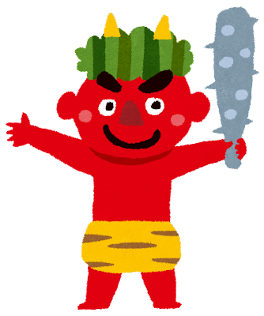
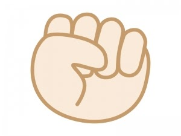
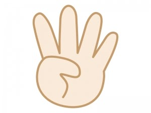
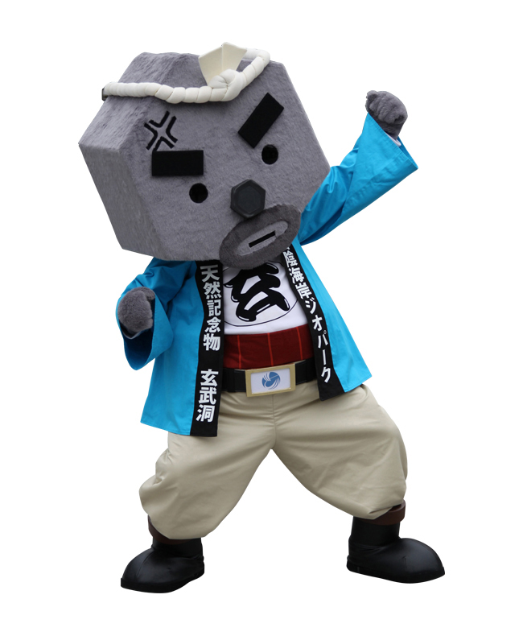

いざ勝負！
- 
- 
いざ勝負！

玄さん
おーちゃん
こーちゃん
豊岡市のシンボルでもある特別天然記念物のこうのとり。
豊岡市では川、田んぼでもこうのとりがよく見られます。

火山活動により山頂から流れ出したマグマが、冷えて固まる時に作り出したきれいな割れ目が連なった洞窟です。
六角形の玄武岩が積み上げられた美しい洞窟です。
7つの外湯があります。温泉街も栄えているため、食べ歩き・足湯めぐり・お土産選びなども楽しめます。
町中に山頂まで昇れるロープウェイがあり、頂上からは城崎の街を一望できます。
小皿に分けて盛られた独特なスタイルの出石（いずし）そばが有名です。
町中に山頂まで昇れるロープウェイがあり、頂上からは城崎の街を一望できます。